Giacomo
Bozzato
Bozzato


Hi! 👋 I'm a UI designer and photographer from Italy, now based in Sydney, focused on visual storytelling for environment-aware and purpose-driven creative projects.
Canséi
environment communication
2023
Canséi is a new communication model for natural parks based on the popularization of biological studies. The goal was to promote the land without provoking unsustainable overtourism. The project applies to Cansiglio, an area in the mountains of northern Italy. It consists of a web platform that allows the user to explore the land and its diverse ecosystems through an immersive experience. Attached is a paper documenting the research process. The project received the Special Award at CDSA 2024. It was displayed at the Milan Central Station and at Ten Square, Singapore.
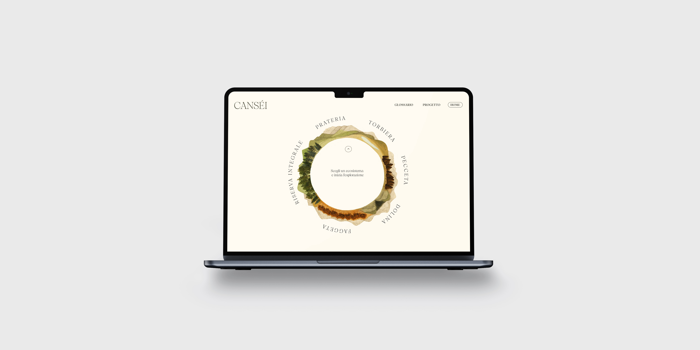

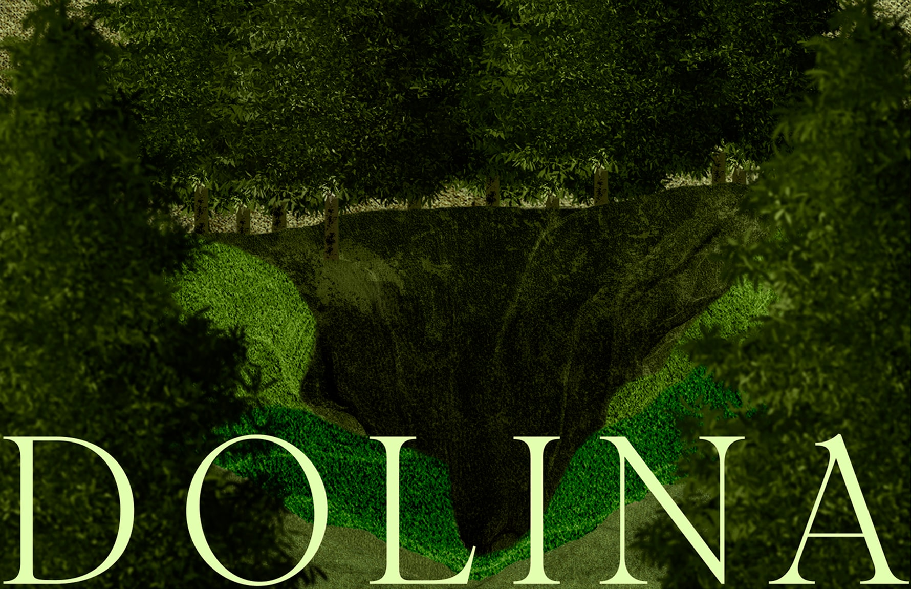
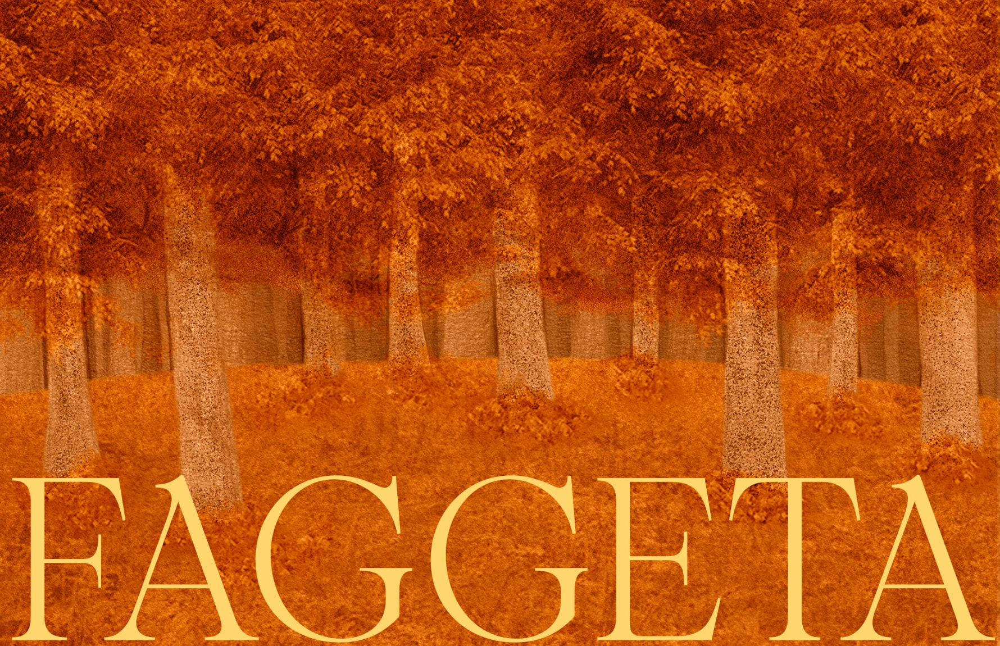
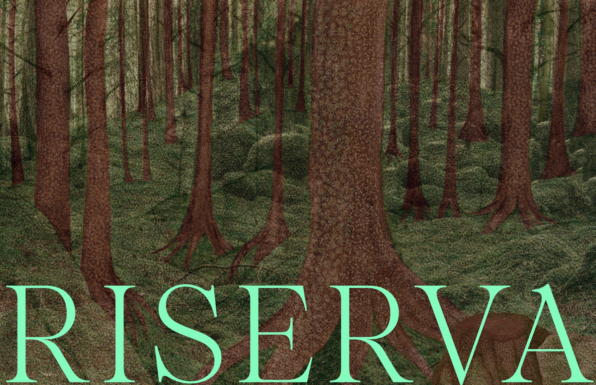
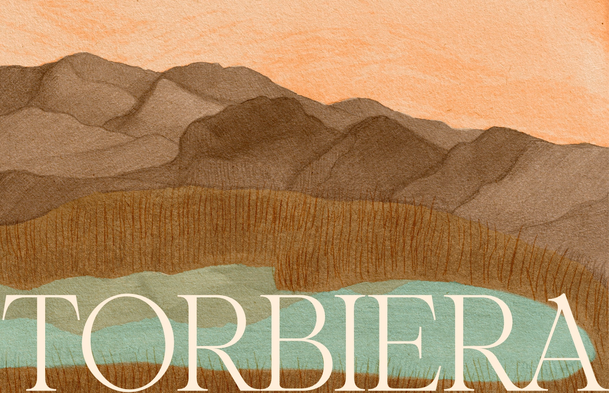
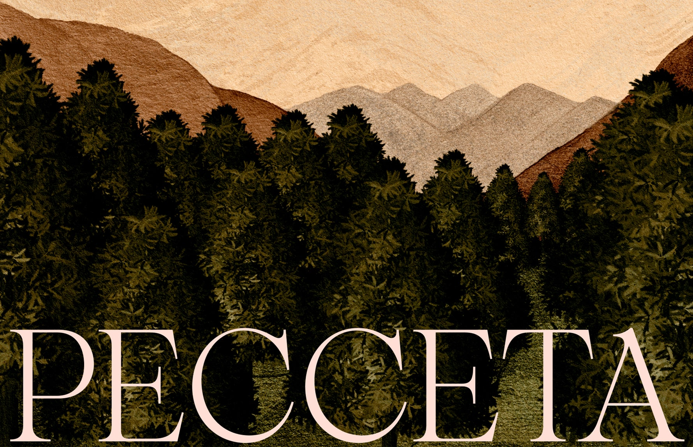
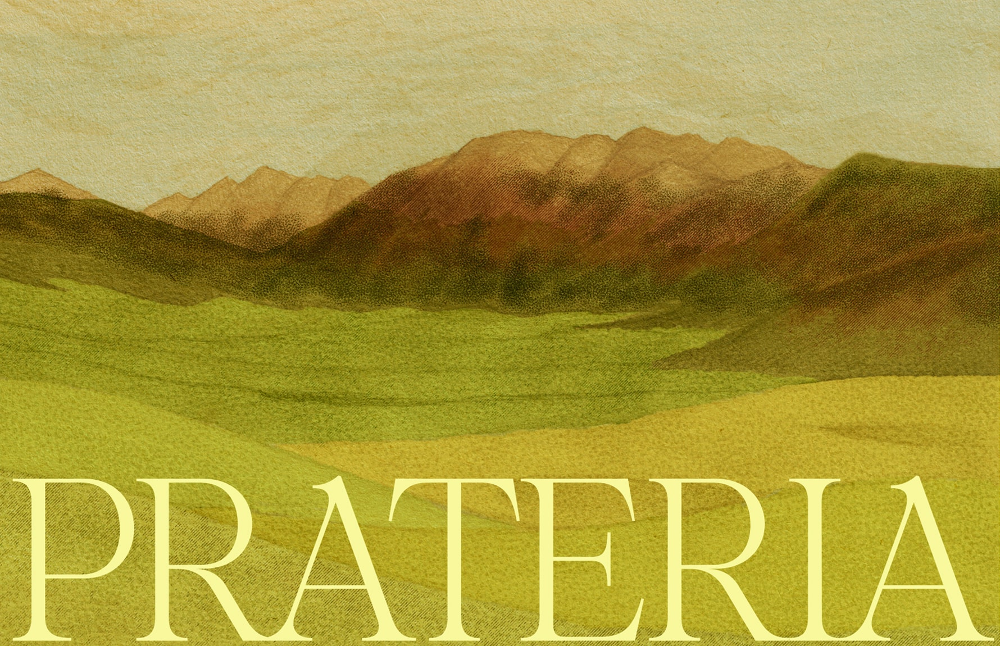
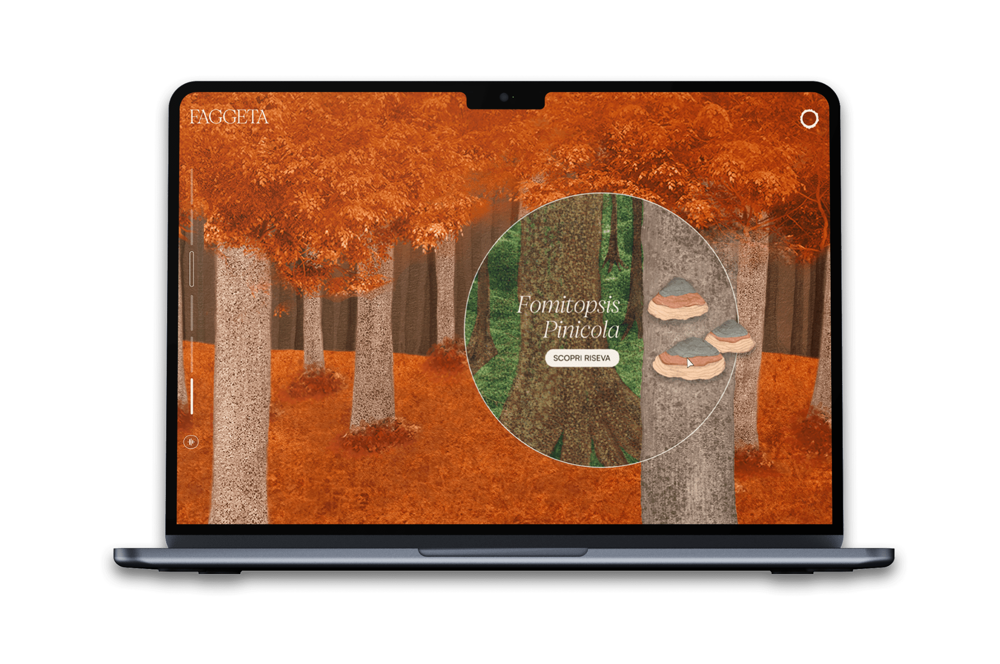
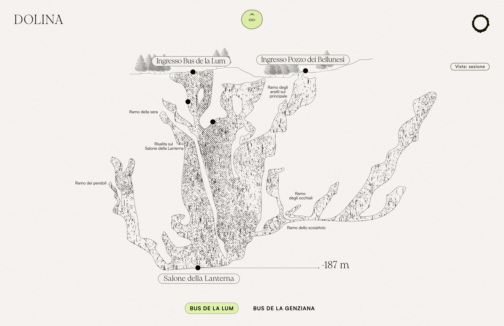
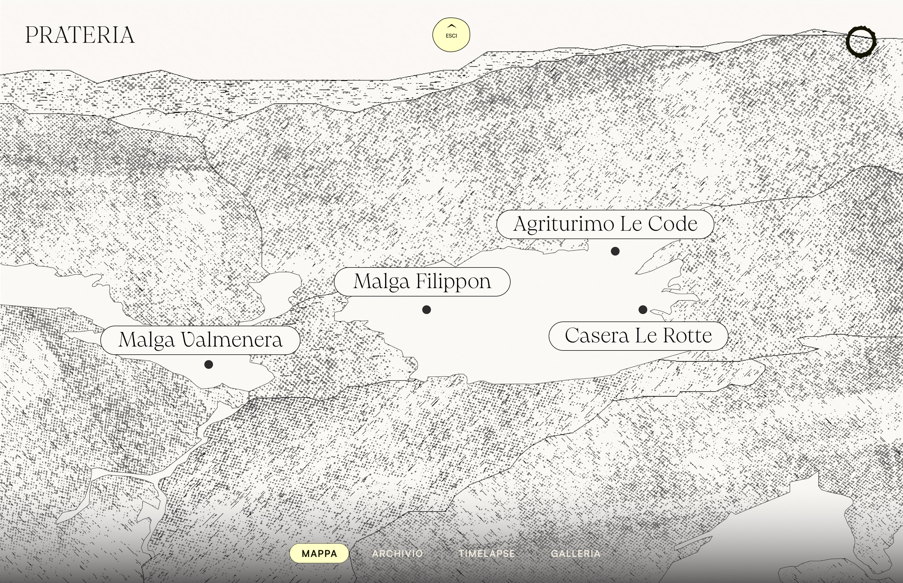
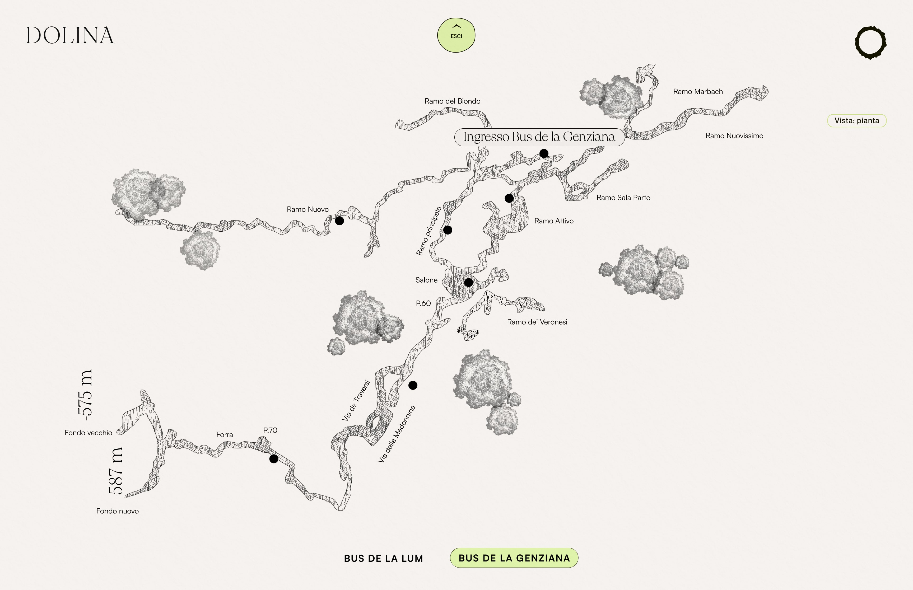
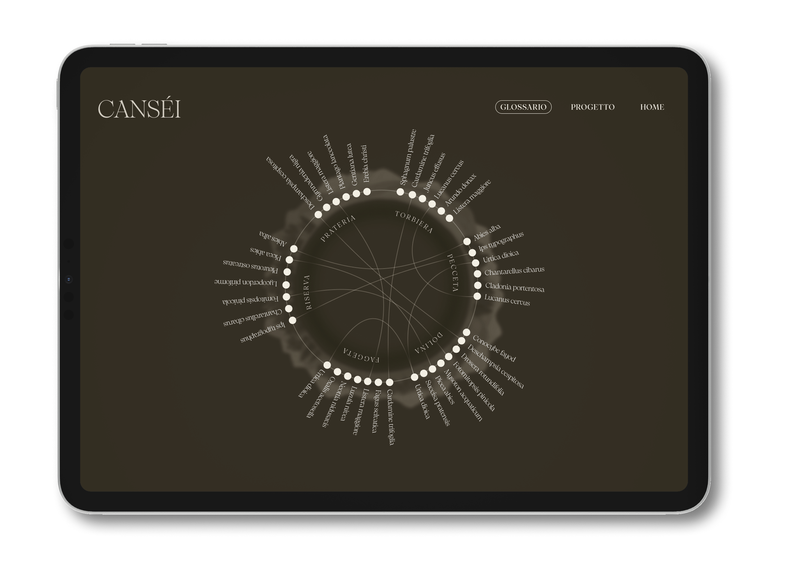
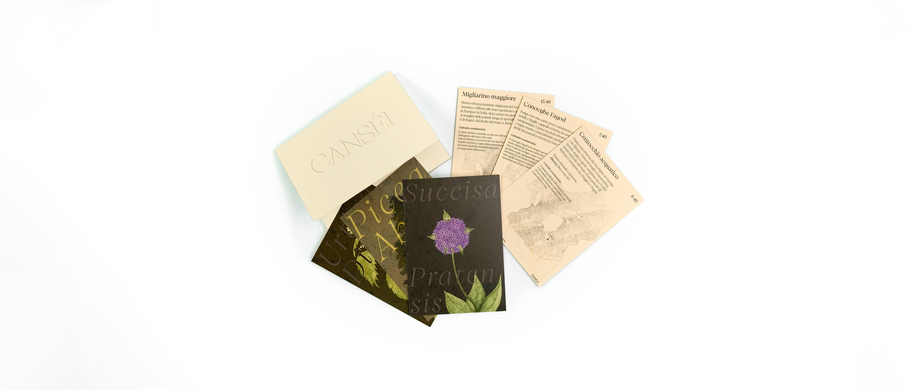